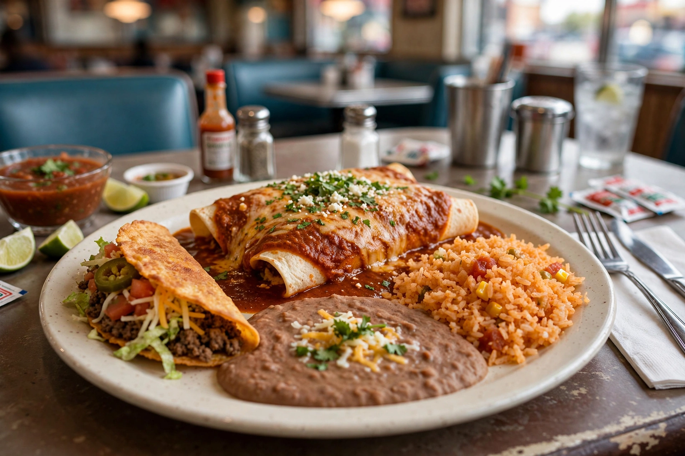

Tex-Mex cuisine
From Wikipedia, the free encyclopedia

Tex-Mex cuisine is the regional cooking of Texas and the US–Mexico borderlands: Mexican in ancestry, Texan in accent, built on flour and corn tortillas, beef, yellow cheese, cumin-heavy chili gravy, refried beans and rice. Its canonical plate — cheese enchiladas with chili con carne, a crispy taco, rice and beans, numbered on menus across Texas — is a 20th-century restaurant creation with 19th-century roots: the chili queens of San Antonio's plazas ladled chili con carne from outdoor stands until the 1930s, and the city carried a chili stand to the 1893 Chicago World's Columbian Exposition that made "chili" an American word.
Landmark dishes
Nachos were improvised in 1940 (or 1943) in Piedras Negras, Mexico, by maître d' Ignacio "Nacho" Anaya, who melted cheese over totopos with jalapeños for US military wives from across the river — a border food from birth. Fajitas rose from Rio Grande Valley vaquero cooking (the diaphragm cut, arrachera, was ranch-hand pay) to Houston fame at Ninfa's in 1973 and a 1980s national craze. Breakfast tacos divide Austin and San Antonio in friendly war; chile con queso, Frito pie and puffy tacos fill out the canon. Texas made chili con carne its state dish in 1977 ("bowl of red", beans forbidden by purists).
Standing
Tex-Mex spent decades dismissed as inauthentic Mexican food, a judgement its defenders — including the Texas food historians who reclaimed the term itself (coined as a railroad nickname, then a label for Tejanos) — answer by treating it as a regional Mexican cuisine shaped by ranching, flour country and the border. Its influence now runs globally: Tex-Mex restaurants from Paris to Tokyo serve the combo plate as "Mexican food", to the mingled pride and exasperation of Mexico itself.